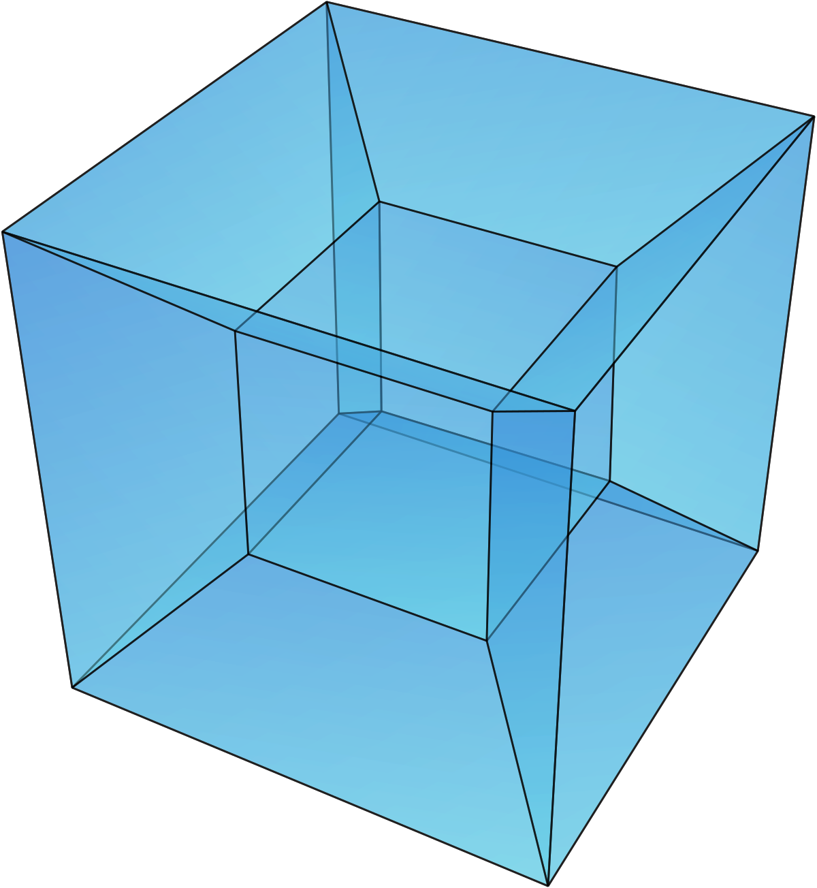
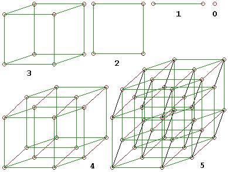

Egy negyedik dimenziós kocka
A hiperkocka a kocka általánosítása több dimenzióra: olyan konvex alakzat, amelynek bármely két éle egyforma hosszú, és vagy párhuzamos, vagy merőleges egymásra. Az egydimenziós hiperkocka a szakasz, a kétdimenziós a négyzet, a háromdimenziós a kocka.
Egy n dimenziós hiperkocka előáll 2n darab (n-1)-dimenziós hiperkocka összeillesztésével; más megközelítésben az n dimenziós hiperkocka az a terület, amelyet az (n-1)-dimenziós hiperkocka a hipersíkjára merőleges, az élhosszával azonos hosszú eltolás során súrol. A koordinátageometriában az origó középpontú, a tengelyekkel párhuzamos élű, 2d élhosszúságú hiperkocka azokat a pontokat tartalmazza, amelyek koordinátáinak a maximumnormája d és -d közé esik.
Konstrukció
Az a oldalhosszú kockák így konstruálhatók:
- Ha egy pontot egyenes mentén eltolunk a távolságra, akkor szakaszt kapunk, ami egydimenziós kocka.
- Ha egy a hosszú szakaszt egy rá merőleges irányban eltolunk, akkor négyzetet kapunk, ami kétdimenziós kocka.
- Ha egy a oldalhosszú négyzetet eltolunk egy olyan irányban, ami merőleges a síkjára, akkor egy háromdimenziós kockát kapunk.
- Általában, ha egy n dimenziós kockát egy rá merőleges irányban a távolságra eltolunk, akkor egy (n+1)-dimenziós kockát kapunk.
Kombinatorikus szerkezet
Az n dimenziós hiperkocka minden csúcsának n szomszédja van; a hiperkockának összesen 2 n {\displaystyle 2^{n}} csúcsa, n ⋅ 2 n − 1 {\displaystyle n\cdot 2^{n-1}} éle és általában ( n k ) ⋅ 2 n − k {\displaystyle {n \choose k}\cdot 2^{n-k}} k dimenziós oldala van. A négydimenziós hiperkockának például 16 csúcsa, 32 éle, 24 lapja és 8 teste van. (A képlet egy egyszerű kombinatorikai gondolatmenettel levezethető: az n dimenziós hiperkocka 2 n {\displaystyle 2^{n}} csúcsának mindegyike ( n k ) {\displaystyle n \choose k} darab k dimenziós oldalhoz tartozik, mivel a csúcs n szomszédjából k-t kiválasztva jelölhetünk ki egy ilyen oldalt. Minden oldalhoz 2 k {\displaystyle 2^{k}} csúcs tartozik, így az oldalak száma 2 n ⋅ ( n k ) 2 k {\displaystyle {\frac {2^{n}\cdot {n \choose k}}{2^{k}}}}.)
A különböző dimenziós oldalak száma az eltolásos konstrukcióval is belátható.
- Az eltolás minden k-ra megduplázza a k dimenziós oldalak számát.
- Minden k dimenziós oldal kiegészül (k+1)-dimenziósra.
Példa: a háromdimenziós kocka eltolással keletkezik a négyzetből.
- A négyzet oldalainak száma megduplázódik
- A négyzet csúcsai élekké egészülnek ki
Így a kockának 2·4+4 éle van.
Megjelenése a kultúrában
Képzőművészeben
- Tony Robbin kockaélek forgatásával és tükrözésével olyan szituációkat ábrázolt rajzban és szobrokon, amik csak egy magasabb dimenzióban lehetségesek.
- Manfred Mohr kompozícióiban olyan vonalakat jelenített meg, amelyek egy háromnál több szabadságfokú térbeli logikát követnek.
- Frank Richter grafikáiban és szobraiban több, mint három térdimenziós konstellációk matematikai szabályait adta vissza.
- Salvador Dalí egy képén (Corpus Hypercubus, 1954) egy négydimenziós hiperkocka kiterített hálója előtt ábrázolja a megfeszített Jézust.
Építészet
- A Grande Arche épülete Párizs La Défense negyedében
Irodalomban és filmen
- Andrzej Sekula Kocka 2: Hiperkocka filmjében a szereplők egy hiperkockában mozognak a tér és az idő dimenzióiban.
- Robert A. Heinlein az And He Built a Crooked House című novellájában egy olyan házról ír, ami egy hiperkockából áll.
- Christopher Nolan Interstellar című filmjének a végén a főszereplő egy hiperkockába zuhan fekete lyukba történő lépését követően. A kockában átalakulnak a tér és idő törvényei, ezáltal kommunikálni tud a gravitációt használva a lányával a múltban.